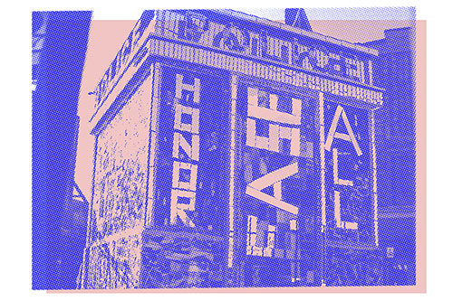
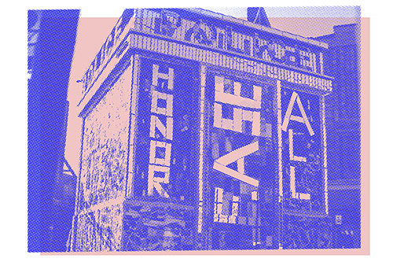

There's No No! Only Yes!
If Loring Cornish Ruled the World

 

Kimi Hanauer: What are some things that you say absolutely 100% yes to?
Loring Cornish:
1. Do I want to make the best out of my life before I die? Hell yeah.
2. Do I want to try new things, even at this age in life? Hell yeah.
3. Do I want to transition from art into another career? Yes, Yes. Or do both.
4. Do I want to… everything is about my career! Do I want to try to make the best of my voice before I die? Yes. Oh yes.
5. Do I believe that Obama was a good president? Yes.
6. Do I think that every artist should own his or her own gallery space and building? Yes. Hell yes.
7. Do I think that artists should go beyond galleries and open their own spaces and forget their middle name? Yes.
8. Do I believe that artists should turn their living quarters into gallery spaces? Yes.
KH: That’s a good list. I live in my own gallery too. It’s kind of great. You can never leave your work, your always there.
LC: Yes! You can never leave. And that’s what propels you even quicker and faster in becoming a sustainable artist. When you are surrounded and when you don’t separate yourself.
KH: That was one of my questions for you actually—one of the reasons I wanted to talk to you about If I Ruled The World is because I feel like your entire practice is about ruling your own world. What does it feel like to live in a house that is actually one of your artworks? Why is that meaningful?
LC: From the very, very beginning I’ve always lived in my work. When I first became an artist in California, I had a house and I immediately turned the house into a gallery space, the entire house. I forbade beds and furniture and chairs and kitchen appliances, I didn’t give into any of that stuff. I turned everything into a work of art.
Where I slept? I think I rolled out maybe a blanket and a pillow, so I could have that space during the day to have art on. At one time had a replica of the Last Supper made of glass in my bedroom, and so I think what happens is, when I live in that environment like that, I’m constantly surrounded. And starting art as late as I did, I think acting like that and living like that actually has propelled me quicker, it’s made me become more stabilized in the art community.
KH: There’s something super in-your-face about your buildings, in a really good way…
LC: People say that’s the whole pull of the place – usually the music is really, really loud. But you know, even when I came back to Baltimore and I got another house, I immediately turned that house into another artwork. Every nook and cranny became a canvas. And that’s another thing, I think our environments should become canvases of who we are. I think, in this project, If I Ruled The World, I never even thought of that for myself before…
KH: That’s why it’s the question!
LC: Your perspective is that I do rule the world in my own environment. And that’s exactly what I do. The house becomes my world and I take it and do exactly what I want with it. And even if other people don’t understand your world, like, why would you put glass in front of your house?
KH: That’s what is beautiful about being loud and putting it in people’s faces – because many people probably don’t and wont understand it, but that’s the thing – who cares?
LC: Right. Who gives a fuck? You are absolutely right. People had so much opposition in the beginning, like what are you doing? Why are you glassing this house? Do you have permission? Who do you think you are?
KH: Did that opposition fuel your practice at all?
LC: Oh, well, I think what I do is I allow people to air out who they are and their opinions – because that’s their world, but I don’t let it affect my world. I be as nice as I possibly can to them, because I know in the end this is my house, and there’s really nothing they can do about it except talk. And talk doesn’t really affect me.
KH: The other thing about your work, and the way that you work, the type of energy you bring, is that everything about it feels really free. You give the feeling that you are really free.
LC: Extremely crucial. It’s very important to be completely free and literally rip yourself with no holds barred, regardless of what people think or say. My whole thing was that I wanted to worship God full time without any interruptions. And so I quit the world of acting. I was on the movie set—I’ll never forget it—I had this thought, you know, I wanted to worship him without any interruption and in my own environment. Which is crazy. But I still wanted to be free and at the end of the day, I quit. The next day, out of my worship came art.
And you know, my neighbors again thought I was crazy, and maybe for a moment I was, but actually to be free to do the thing that I wanted to in my own world, actually led me to become an artist. I had no intention of becoming an artist. My degree is in mass communications! I had no intention of putting artworks together. And I also don’t have a formal education in art—so I don’t know the barriers, or what you should or should not do. Or the techniques, or how to come about this or that texture. I couldn’t tell you about acrylic or oil… I just don’t know!
KH: Maybe that is part of what makes you feel free.


My need to create a wonderful place for people to enjoy is part of me giving back something that was so freely given to me.
LC: Exactly. There’s no no! Only yes. So if I get an idea, its yes. Its yes lets do it! Lets see what happens.
KH: This project is also all about positivity, that’s one of the reasons I wanted to talk to you. Do you ever have this experience of frustration and positivity fueling one another or working together?
LC: You know, being an artist, we don’t have steady paychecks. But the positive part of it is, of course, making a space that people can come into and love the work that you do. But then the other side of it is actually making the pieces, getting the products together, and the process, the hard work, the time, the effort, and the no sleep. And all the uncertainty of whether this is actually going to pay off—that’s the frustration part of it.
I guess it all goes hand in hand, but sometimes it can be a little overbearing when you go like, what am I doing? I clean up, I make art, I mess up, I clean up, I make art, I mess up… but there is a leveling balance to being frustrated, and there is also a reward; that someone is touched, just by being in this environment…in my world. When you walk into this gallery, into this space, it’s another environment, and there’s a lot of work behind creating an environment where people can actually feel the energy of love positivity, hope, empowerment and peace all around them.
KH: The mega positive space that you create can also be read as a critique. Do you think there is a lack of this type of space, or maybe it’s that there couldn’t be enough of it?
LC: Well, I think my need to create a wonderful place for people to enjoy is a part of me giving back something that was so freely given to me. When no one is in this gallery and I’m working on art and I’m worshiping God, it’s the best feeling in the world. I’m in here for hours, just me and the music and the art, regardless of what’s happening outside the world. In the world that I rule, there’s so much peace and joy and happiness.
Sometimes I’m crying because I’m so happy and I’m worshiping god to the top of my lungs, and I love the individual attention, just me and my God and the art. There’s nothing else that I see or feel; no radio, no TV. So I don’t know what’s going on outside, I’m isolated, but it’s not a bad isolation. This isolation, I deem it necessary to birth out this environment.
KH: And this environment also becomes really social at times.
LC: When people come in to this environment—regardless of what’s happening outside—in here, people become friendly, and they start talking to one another even if they are complete strangers, and I love that.
KH: Totally. One of my favorite things is the social aspect of art happenings—people go just to be around other people, not just look at the art. Do you think living in Baltimore affects your work?
LC: I think any environment you are in affects your work—it doesn’t matter where you are. It affects what you do, how you work, how you live your life. You can’t be separate from the environment you work in—if you have any type of feeling at all, you can’t but help be affected.
I think here, recently with all the uprisings, with all the deaths of black men by police officers— that greatly impacted my soul. And it made me do this installation, kind of really, really heavy. I hung all these black dolls from my tree, hundreds and hundreds of them, with ropes hanging from their necks, in front of one of my glass houses. It dealt with the subject of these black men being killed.
KH: Was there a specifically meaningful moment you had experienced during the time of the Uprising that influenced that work?
LC: The most important moment from that time was me waking up, right after Walter Scott was shot in the back five times. I woke up this morning—and this was even before Freddie Gray—I woke up with this feeling of empathy for this young man. With this feeling, like, who was going to speak for him if he’s dead?I felt like I couldn’t go on with my life and not try to speak for him, not try to do something worthwhile. I compared, if his life was over, what was I doing with mine? Like, oh my Gosh! what am I doing? This guy is dead, and what am I doing for his death? I couldn’t let it go.
I posted it on Facebook, tears rolling down my face. I got so many hits and responses, I felt this thing and I didn’t know what I was going to do. And that was the moment, that thing right there, that’s the thing I hold on to. Even the installation and all that, it was just the aftermath of the feeling that I got. And I still hold on to it, if something hits you that hard, it’s like a seed has been planted and its up to you to get the fruit from that seed and let the world see that.

I woke up with this feeling of empathy for this young man. With this feeling, like, who was going to speak for him if he’s dead?
KH: What is your favorite thing about Baltimore?
LC: Well, my favorite thing about Baltimore used to be trash, because I used to find trash and make art out of it, and Baltimore was such a trashy city! You could ride down the street and find piles of trash everywhere! It was just horrible! But I loved it because I could just find everything. You know, people saw trash; I saw art installations!
And what I love about Baltimore now, is that I can get from point A to point B in no time. Like especially late at night, oh my Gosh, I can get straight to my houses in less than 2 or 3 minutes on the freeway. I love that—the proximity of the places I want to go, and it gives me more time to create, to rule my world, to expand my world, more time to make my world really the best it can be.
KH: Do you have any advice for young people or young artists?
LC: Oh my Gosh. Hell yeah. Take your environment and make it your art gallery, right from the beginning, I don’t care if you’re in a room or an apartment, make that room your gallery. And don’t worry about your furniture or your bed or the things that society says you need. Live vicariously! Sleep on a pillow and a blanket. Get rid of the bed. Make your entire space your world. And you don’t need things in your world that aren’t beneficial to your career. Immerse yourself completely in it. As much as you possibly can.
Starve! If it’s the choice between food and the art products—get the art products!!! Starve! I starved for years! I ate out of dumpsters for years. That’s what I ate, cause I had no money, but I was doing art. The longer you work, the harder you work, the quicker your ascension into your field.
KH: Last question. So if you ruled the world – all of it! What would it look like? What is ruling to you?
LC: Oh my Gosh. If I ruled the world!!! I think Obama is doing a great job ruling the U.S. Whatever he’s doing, I think I’d do that. I’m going to leave it at that. If I ruled the world?? Oh my God. Whatever he’s doing, I’d do that all over the world.
LORING CORNISH - Baltimore native, Loring Cornish, is a visionary artist whose work often takes the form of mosaics. He characterizes his practice as a form of prayer, as he constantly transforms and alters his own house as his work of art.
Photos by Olivia Obineme